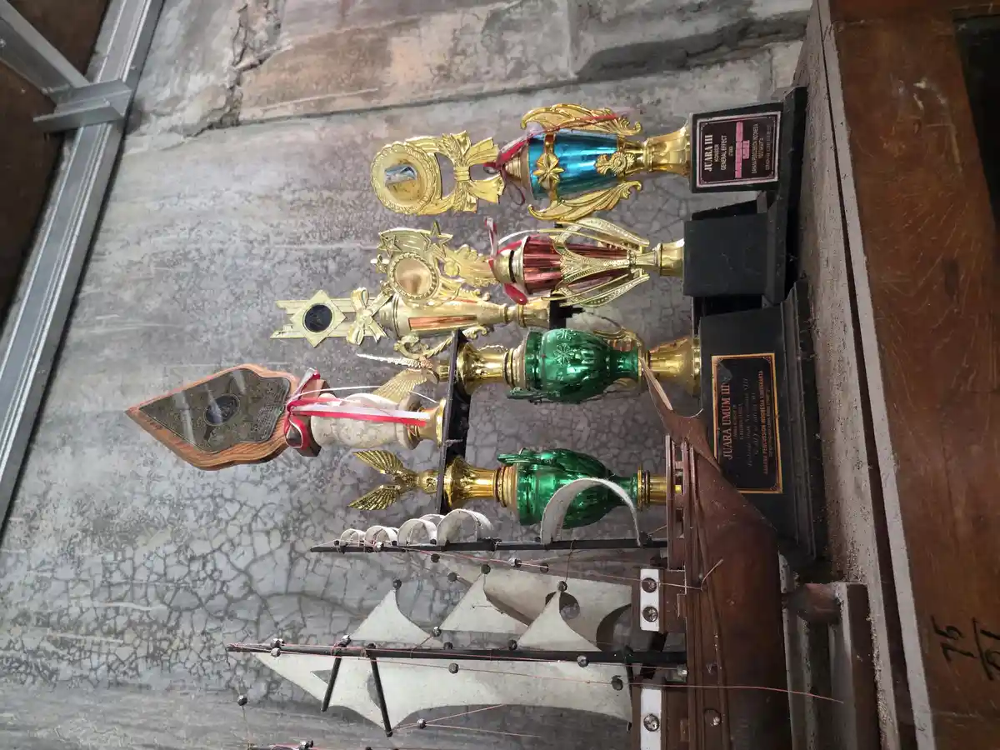
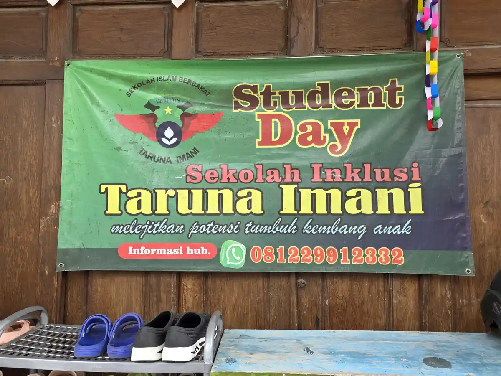
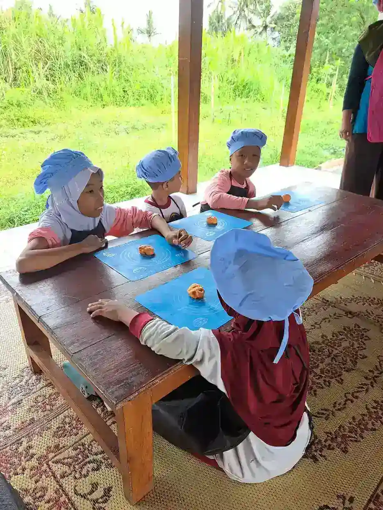

SLB adalah singkatan dari Sekolah Luar Biasa, yaitu lembaga pendidikan formal yang secara khusus melayani anak-anak berkebutuhan khusus (ABK) di Indonesia. Sekolah luar biasa menjadi salah satu pilar penting dalam sistem pendidikan nasional karena memberikan kesempatan belajar bagi anak-anak yang memiliki kebutuhan pendidikan berbeda dari anak pada umumnya. Berdasarkan data Kementerian Pendidikan, Kebudayaan, Riset, dan Teknologi (Kemendikbudristek), Indonesia memiliki lebih dari 2.200 SLB yang tersebar di seluruh provinsi, dengan total peserta didik mencapai lebih dari 150.000 anak.
Di Yayasan Ukhuwah Kaffah Amanatullah (YUKA), kami memiliki pengalaman bekerja sama dengan berbagai SLB di Yogyakarta dalam upaya memberikan pendidikan dan pendampingan terbaik bagi anak berkebutuhan khusus. Melalui Sekolah Inklusi Taruna Imani di Sleman, Yogyakarta, kami melihat langsung betapa pentingnya pendidikan yang sesuai dengan kebutuhan setiap anak. Artikel ini kami susun untuk membantu orang tua, guru, dan masyarakat umum memahami secara mendalam tentang SLB, mulai dari pengertian, jenis, kurikulum, hingga daftar SLB terdekat di Yogyakarta.
Daftar Isi
- Apa Itu SLB (Sekolah Luar Biasa)?
- Jenis-Jenis SLB di Indonesia (SLB-A sampai SLB-G)
- Kurikulum dan Metode Pembelajaran di SLB
- Perbedaan SLB dan Sekolah Inklusi
- Daftar SLB di Yogyakarta dan Sekitarnya
- Cara Memilih SLB yang Tepat untuk Anak
- Pengalaman YUKA Bekerja Sama dengan SLB di Yogyakarta
- FAQ Seputar SLB
Apa Itu SLB (Sekolah Luar Biasa)?
SLB adalah lembaga pendidikan formal yang diselenggarakan oleh pemerintah maupun swasta untuk memberikan layanan pendidikan bagi anak-anak berkebutuhan khusus. Istilah "luar biasa" dalam konteks ini merujuk pada kekhususan yang dimiliki peserta didiknya, bukan berarti sekolah tersebut lebih baik atau lebih buruk dari sekolah reguler. SLB hadir sebagai bentuk pemenuhan hak pendidikan bagi setiap warga negara, sebagaimana diamanatkan dalam UUD 1945 Pasal 31 dan UU No. 20 Tahun 2003 tentang Sistem Pendidikan Nasional.
Secara historis, pendidikan khusus di Indonesia sudah dimulai sejak era kolonial Belanda. Sekolah pertama untuk anak tunanetra didirikan di Bandung pada tahun 1901, diikuti oleh sekolah untuk anak tunarungu di Bandung pada tahun 1930. Setelah kemerdekaan, pemerintah Indonesia secara bertahap mengembangkan sistem pendidikan khusus yang lebih terstruktur dan merata di seluruh nusantara.
Dalam Peraturan Pemerintah No. 17 Tahun 2010 tentang Pengelolaan dan Penyelenggaraan Pendidikan, pendidikan khusus didefinisikan sebagai pendidikan bagi peserta didik yang memiliki tingkat kesulitan dalam mengikuti proses pembelajaran karena kelainan fisik, emosional, mental, sosial, dan/atau memiliki potensi kecerdasan serta bakat istimewa. SLB menyelenggarakan pendidikan mulai dari jenjang TKLB (Taman Kanak-Kanak Luar Biasa), SDLB (Sekolah Dasar Luar Biasa), SMPLB (Sekolah Menengah Pertama Luar Biasa), hingga SMALB (Sekolah Menengah Atas Luar Biasa).
Tujuan utama SLB bukan hanya memberikan pendidikan akademik, tetapi juga mengembangkan kemandirian, keterampilan hidup, dan kemampuan sosial anak berkebutuhan khusus agar mereka dapat berpartisipasi aktif dalam kehidupan bermasyarakat. Sekolah luar biasa dilengkapi dengan tenaga pendidik yang memiliki kualifikasi khusus di bidang pendidikan luar biasa (PLB), serta fasilitas dan sarana prasarana yang disesuaikan dengan jenis kekhususan peserta didiknya.
Tahukah Anda?
Berdasarkan data Kemendikbudristek, dari sekitar 1,6 juta anak berkebutuhan khusus usia sekolah di Indonesia, baru sekitar 18-20% yang mendapatkan layanan pendidikan formal, baik melalui SLB maupun sekolah inklusi. Ini menunjukkan bahwa masih ada tantangan besar dalam pemerataan akses pendidikan bagi anak berkebutuhan khusus di Indonesia.
Jenis-Jenis SLB di Indonesia (SLB-A sampai SLB-G)
Di Indonesia, jenis SLB diklasifikasikan berdasarkan kekhususan peserta didik yang dilayani. Setiap jenis SLB memiliki kurikulum, metode pengajaran, dan fasilitas yang disesuaikan dengan karakteristik dan kebutuhan peserta didiknya. Berikut adalah penjelasan lengkap mengenai setiap jenis SLB:
SLB-A (Tunanetra)
SLB-A adalah sekolah luar biasa yang melayani anak-anak dengan gangguan penglihatan, baik yang mengalami kebutaan total maupun low vision (penglihatan rendah). Pembelajaran di SLB-A menggunakan huruf Braille sebagai media utama untuk membaca dan menulis. Selain itu, siswa juga dilatih orientasi dan mobilitas (O&M) agar mampu bergerak secara mandiri di lingkungan sekitar. Alat bantu seperti reglet, stylus, mesin tik Braille, dan komputer bicara menjadi bagian penting dalam proses belajar mengajar.
SLB-B (Tunarungu)
SLB-B melayani anak-anak dengan gangguan pendengaran, mulai dari gangguan pendengaran ringan hingga tuli total. Metode komunikasi yang digunakan meliputi bahasa isyarat (SIBI atau Bisindo), membaca ujaran (lip reading), dan metode oral. SLB-B juga melatih siswa untuk mengoptimalkan sisa pendengarannya melalui terapi wicara dan penggunaan alat bantu dengar. Tujuan utamanya adalah agar anak tunarungu mampu berkomunikasi secara efektif dengan lingkungan sekitarnya.
SLB-C (Tunagrahita)
SLB-C diperuntukkan bagi anak-anak dengan tunagrahita, yaitu kondisi di mana fungsi intelektual berada di bawah rata-rata yang disertai dengan keterbatasan dalam perilaku adaptif. SLB-C dibagi menjadi dua kategori: SLB-C untuk tunagrahita ringan (IQ 50-70) dan SLB-C1 untuk tunagrahita sedang (IQ 25-50). Pembelajaran di SLB-C lebih menekankan pada pengembangan keterampilan hidup sehari-hari (bina diri), keterampilan vokasional, dan kemampuan sosial. Materi akademik diberikan dengan penyederhanaan dan modifikasi yang disesuaikan dengan kemampuan peserta didik.
SLB-D (Tunadaksa)
SLB-D melayani anak-anak dengan gangguan fisik atau kelainan pada sistem otot, tulang, dan persendian yang menyebabkan keterbatasan dalam melakukan gerakan-gerakan tertentu. Kondisi ini bisa disebabkan oleh cerebral palsy, polio, amputasi, atau kelainan bawaan lainnya. SLB-D dilengkapi dengan fasilitas aksesibel seperti ramp, pegangan tangan di sepanjang koridor, toilet khusus, dan peralatan terapi fisik. Pembelajaran tetap mengacu pada kurikulum akademik, dengan tambahan program bina gerak dan fisioterapi.
SLB-E (Tunalaras)
SLB-E diperuntukkan bagi anak-anak yang mengalami gangguan emosi dan perilaku (tunalaras). Anak tunalaras menunjukkan perilaku yang menyimpang dari norma sosial, seperti agresivitas berlebihan, perilaku antisosial, atau gangguan emosional yang mengganggu proses belajar dan interaksi sosial. Pendekatan di SLB-E melibatkan terapi perilaku, konseling, dan program pengelolaan emosi. Jumlah SLB-E di Indonesia relatif sedikit dibandingkan jenis SLB lainnya.
SLB-F (Autisme)
SLB-F secara khusus melayani anak-anak dengan gangguan spektrum autisme (Autism Spectrum Disorder/ASD). Anak dengan autisme umumnya mengalami kesulitan dalam komunikasi sosial, interaksi sosial, serta menunjukkan pola perilaku yang berulang dan minat yang terbatas. Pembelajaran di SLB-F menggunakan pendekatan terstruktur seperti Applied Behavior Analysis (ABA), TEACCH, dan metode visual. Rasio guru dan siswa biasanya lebih kecil untuk memastikan setiap anak mendapatkan perhatian yang cukup.
SLB-G (Tunaganda)
SLB-G melayani anak-anak yang memiliki lebih dari satu jenis kekhususan, misalnya tunanetra sekaligus tunagrahita, atau tunarungu sekaligus tunadaksa. Program pendidikan di SLB-G sangat individual karena setiap peserta didik memiliki kombinasi kekhususan yang berbeda-beda. Kurikulum dan metode pembelajaran dirancang secara spesifik untuk setiap anak berdasarkan hasil asesmen menyeluruh.

Selain ketujuh jenis di atas, terdapat juga SLB Campuran atau SLB yang menyelenggarakan pendidikan untuk lebih dari satu jenis kekhususan dalam satu lembaga. Model SLB campuran ini cukup banyak ditemukan di Indonesia, terutama di daerah yang belum memiliki SLB untuk setiap jenis kekhususan. Dengan adanya SLB campuran, anak-anak dengan berbagai jenis kekhususan tetap bisa mendapatkan layanan pendidikan tanpa harus pergi ke kota yang jauh untuk mencari SLB terdekat sesuai kekhususannya.
Kurikulum dan Metode Pembelajaran di SLB
Kurikulum SLB di Indonesia mengacu pada Kurikulum Merdeka yang telah dimodifikasi dan disesuaikan dengan kebutuhan peserta didik berkebutuhan khusus. Kementerian Pendidikan telah menerbitkan pedoman khusus yang memungkinkan guru di SLB untuk melakukan penyesuaian pada capaian pembelajaran, konten materi, serta metode evaluasi agar relevan dengan kemampuan dan potensi setiap peserta didik.
Secara umum, kurikulum di sekolah luar biasa terdiri dari tiga komponen utama:
- Program Akademik: Meliputi mata pelajaran umum seperti Bahasa Indonesia, Matematika, IPA, IPS, Pendidikan Agama, dan PKn. Konten dan target pembelajaran disesuaikan dengan kemampuan peserta didik. Untuk anak tunagrahita misalnya, materi matematika lebih fokus pada konsep dasar yang aplikatif dalam kehidupan sehari-hari seperti mengenal uang dan berhitung sederhana.
- Program Kekhususan (Kompensatoris): Ini adalah program khas SLB yang tidak ada di sekolah reguler. Contohnya: Orientasi dan Mobilitas (O&M) untuk tunanetra, Bina Komunikasi Persepsi Bunyi dan Irama (BKPBI) untuk tunarungu, Bina Diri untuk tunagrahita, Bina Gerak untuk tunadaksa, dan Bina Pribadi dan Sosial untuk tunalaras.
- Program Keterampilan Vokasional: Program ini bertujuan membekali peserta didik dengan keterampilan kerja yang aplikatif agar mereka bisa hidup mandiri setelah lulus. Keterampilan yang diajarkan beragam, mulai dari tata boga, tata busana, pertukangan, pertanian, seni kriya, hingga keterampilan IT dasar. Program ini menjadi sangat penting terutama di jenjang SMPLB dan SMALB.
Metode Pembelajaran di SLB
Metode pembelajaran di SLB berbeda signifikan dari sekolah reguler. Guru SLB dilatih untuk menggunakan berbagai pendekatan yang disesuaikan dengan karakteristik peserta didiknya. Beberapa metode yang umum digunakan antara lain:
- Pembelajaran Individual (Individualized Education Program/IEP): Setiap siswa memiliki rencana pembelajaran individual yang disusun berdasarkan hasil asesmen. IEP mencakup target jangka pendek dan jangka panjang, strategi pengajaran, serta kriteria evaluasi yang spesifik untuk masing-masing anak.
- Pembelajaran Multi-Sensori: Guru menggunakan berbagai indera dalam proses pembelajaran, misalnya menggabungkan materi visual, auditori, dan taktil. Pendekatan ini sangat efektif untuk anak-anak yang memiliki gaya belajar tertentu atau keterbatasan pada salah satu indera.
- Task Analysis (Analisis Tugas): Keterampilan yang kompleks dipecah menjadi langkah-langkah kecil yang lebih mudah dipahami dan dikuasai. Misalnya, keterampilan mencuci tangan dipecah menjadi 10-15 langkah kecil yang diajarkan secara bertahap.
- Pembelajaran Berbasis Pengalaman Langsung: Anak-anak belajar melalui pengalaman nyata dan praktik langsung, bukan hanya teori. Misalnya, belajar tentang uang dilakukan dengan simulasi jual beli di toko, bukan sekadar menghafal nilai mata uang.
- Penggunaan Teknologi Asistif: SLB modern memanfaatkan berbagai teknologi untuk mendukung pembelajaran, seperti komputer bicara untuk tunanetra, speech-to-text untuk tunarungu, dan aplikasi edukatif interaktif untuk anak autisme.
Rasio guru dan siswa di SLB jauh lebih kecil dibandingkan sekolah reguler. Idealnya, satu guru menangani 5-8 siswa, tergantung pada jenis dan tingkat kekhususan peserta didik. Hal ini memungkinkan guru untuk memberikan perhatian yang lebih personal dan menyesuaikan kecepatan pembelajaran dengan kemampuan setiap anak.
Perbedaan SLB dan Sekolah Inklusi
Salah satu pertanyaan yang paling sering diajukan oleh orang tua anak berkebutuhan khusus adalah: "Sebaiknya anak saya bersekolah di SLB atau sekolah inklusi?" Untuk menjawab pertanyaan ini, penting untuk memahami perbedaan mendasar antara keduanya.

Sekolah Luar Biasa (SLB)
- Hanya menerima anak berkebutuhan khusus sebagai peserta didik
- Menggunakan kurikulum khusus yang telah dimodifikasi untuk ABK
- Guru memiliki kualifikasi khusus di bidang Pendidikan Luar Biasa (PLB)
- Fasilitas dan sarana prasarana dirancang khusus sesuai kebutuhan ABK
- Rasio guru dan siswa lebih kecil (1:5 hingga 1:8)
- Fokus pada pengembangan kemandirian dan keterampilan vokasional
- Interaksi sosial terbatas pada sesama anak berkebutuhan khusus
Sekolah Inklusi
- Menerima anak berkebutuhan khusus bersama anak reguler dalam satu kelas
- Menggunakan kurikulum reguler dengan modifikasi dan akomodasi untuk ABK
- Memiliki Guru Pembimbing Khusus (GPK) yang mendampingi ABK di kelas reguler
- Fasilitas disesuaikan agar aksesibel untuk semua siswa
- ABK mendapatkan kesempatan berinteraksi dan belajar bersama teman sebaya yang tipikal
- Fokus pada partisipasi dan penerimaan sosial
- Pengalaman sosial lebih beragam dan realistis
Tidak ada jawaban tunggal yang benar untuk semua anak. Pilihan antara SLB dan sekolah inklusi sangat bergantung pada kondisi, kebutuhan, dan potensi masing-masing anak. Beberapa anak dengan kekhususan yang lebih berat mungkin lebih diuntungkan dengan program intensif di SLB, sementara anak dengan kekhususan yang lebih ringan bisa berkembang pesat di lingkungan sekolah inklusi yang memberi kesempatan untuk bersosialisasi dengan teman sebaya. Untuk memahami lebih jauh, Anda bisa membaca artikel kami tentang peran orang tua dalam pendidikan inklusi.
Tips dari YUKA
Jika Anda masih bingung memilih antara SLB dan sekolah inklusi, langkah terbaik adalah melakukan asesmen menyeluruh pada anak Anda oleh psikolog atau tim ahli. Hasil asesmen ini akan membantu menentukan lingkungan pendidikan mana yang paling sesuai dengan kebutuhan dan potensi anak. Ingatlah bahwa pilihan ini tidak bersifat final - anak bisa berpindah dari SLB ke sekolah inklusi atau sebaliknya, sesuai dengan perkembangan yang dicapai.
Daftar SLB di Yogyakarta dan Sekitarnya
Daerah Istimewa Yogyakarta (DIY) memiliki cukup banyak SLB di Yogyakarta yang tersebar di berbagai kabupaten dan kota. Bagi orang tua yang sedang mencari SLB terdekat di wilayah Yogyakarta, berikut adalah daftar beberapa SLB Negeri yang bisa menjadi referensi:
| Nama SLB | Alamat | Jenis Layanan |
|---|---|---|
| SLB Negeri 1 Bantul | Jl. Wates KM 3, Bantul | SLB Campuran (Tunanetra, Tunarungu, Tunagrahita, Tunadaksa, Autisme) |
| SLB Negeri 2 Bantul | Jl. Imogiri Barat, Bantul | SLB Campuran (Tunarungu, Tunagrahita, Autisme) |
| SLB Negeri 1 Yogyakarta | Jl. Bintaran Tengah No. 3, Yogyakarta | SLB Campuran (Tunanetra, Tunarungu, Tunagrahita) |
| SLB Negeri Pembina Yogyakarta | Jl. Imogiri No. 224, Yogyakarta | SLB-C (Tunagrahita), Autisme |
| SLB Marsudi Putra | Jl. Godean KM 6, Sleman | SLB Campuran (Tunagrahita, Autisme) |
Selain SLB Negeri yang dibiayai oleh pemerintah, di Yogyakarta juga terdapat banyak SLB Swasta dan lembaga pendidikan khusus yang dikelola oleh yayasan atau organisasi masyarakat. Masing-masing memiliki keunggulan dan pendekatan yang berbeda-beda. Untuk informasi lebih lengkap mengenai SLB di wilayah SLB Yogyakarta, Anda bisa menghubungi Dinas Pendidikan, Pemuda, dan Olahraga DIY atau mengunjungi website resmi mereka.
Jika Anda merasa bahwa anak Anda membutuhkan lingkungan yang menggabungkan pendidikan khusus dan pendidikan reguler, Anda juga bisa mempertimbangkan sekolah inklusi. YUKA melalui Sekolah Inklusi Taruna Imani di Sleman, Yogyakarta, menawarkan pendekatan pendidikan holistik yang menggabungkan akademik, keagamaan, dan keterampilan hidup. Hubungi kami di +62 812-2991-2332 untuk berkonsultasi tentang kebutuhan pendidikan anak Anda.
Cara Memilih SLB yang Tepat untuk Anak
Memilih sekolah luar biasa yang tepat untuk anak berkebutuhan khusus adalah keputusan penting yang memerlukan pertimbangan matang. Berikut adalah beberapa panduan yang bisa membantu orang tua dalam membuat keputusan terbaik, yang juga sejalan dengan panduan kami tentang cara memilih yayasan untuk anak berkebutuhan khusus:
1. Lakukan Asesmen Menyeluruh pada Anak
Langkah pertama dan paling krusial adalah mendapatkan asesmen yang akurat tentang kondisi anak. Bawa anak Anda ke psikolog atau dokter spesialis anak untuk mendapatkan diagnosa yang jelas. Hasil asesmen ini akan menjadi dasar dalam menentukan jenis SLB yang paling sesuai. Pastikan asesmen mencakup aspek kognitif, sosial-emosional, perilaku adaptif, serta kekuatan dan kelemahan anak.
2. Kenali Kebutuhan Spesifik Anak
Setiap anak berkebutuhan khusus memiliki profil yang unik. Anak dengan diagnosa yang sama pun bisa memiliki kebutuhan yang berbeda. Identifikasi secara spesifik apa yang anak Anda butuhkan: apakah terapi wicara, terapi okupasi, terapi perilaku, program akademik yang dimodifikasi, atau pelatihan keterampilan hidup? Pilih SLB yang memiliki program dan fasilitas yang sesuai dengan kebutuhan tersebut.
3. Kunjungi Langsung Beberapa SLB
Jangan hanya mengandalkan informasi dari internet atau rekomendasi orang lain. Kunjungi langsung beberapa SLB yang menjadi kandidat. Perhatikan suasana sekolah, kebersihan, fasilitas, interaksi antara guru dan siswa, serta sikap tenaga pendidik terhadap peserta didik. Bicaralah dengan kepala sekolah dan guru untuk memahami visi, misi, dan pendekatan pembelajaran yang mereka terapkan.
4. Perhatikan Kualifikasi dan Komitmen Guru
Guru adalah faktor penentu keberhasilan pendidikan anak di SLB. Tanyakan tentang latar belakang pendidikan guru, apakah mereka memiliki gelar di bidang Pendidikan Luar Biasa (PLB) atau bidang terkait. Yang tak kalah penting adalah komitmen dan kasih sayang guru terhadap peserta didik. Guru yang memiliki passion dalam mendidik ABK akan membuat perbedaan besar dalam perkembangan anak.
5. Pertimbangkan Jarak dan Aksesibilitas
Faktor jarak antara rumah dan sekolah juga perlu dipertimbangkan. Perjalanan yang terlalu jauh dan melelahkan dapat memengaruhi kesiapan belajar anak. Jika memungkinkan, pilihlah SLB terdekat yang tetap memenuhi kebutuhan anak. Perhatikan juga aksesibilitas transportasi menuju sekolah, terutama untuk anak dengan keterbatasan mobilitas.
6. Evaluasi Program Keterampilan Vokasional
Khususnya untuk anak yang sudah memasuki jenjang SMPLB atau SMALB, program keterampilan vokasional menjadi sangat penting. Pilih SLB yang memiliki program vokasional yang relevan dan bisa menjadi bekal anak untuk hidup mandiri di masa depan. Beberapa SLB unggul dalam bidang tertentu seperti tata boga, seni rupa, pertanian, atau keterampilan IT. Pelajari juga mengenai program pemberdayaan anak berkebutuhan khusus yang bisa mendukung kemandirian mereka.
7. Libatkan Anak dalam Proses Pemilihan
Sesuai dengan kemampuan pemahaman anak, libatkan mereka dalam proses pemilihan sekolah. Ajak anak berkunjung ke SLB yang menjadi kandidat dan perhatikan reaksinya. Apakah anak merasa nyaman? Apakah ada ketertarikan terhadap aktivitas yang ditawarkan? Pendapat dan perasaan anak, meskipun mungkin tidak bisa diungkapkan secara verbal, tetap penting untuk dipertimbangkan.

Pengalaman YUKA Bekerja Sama dengan SLB di Yogyakarta
Yayasan Ukhuwah Kaffah Amanatullah (YUKA) telah lama berkiprah dalam dunia pendidikan anak berkebutuhan khusus di Yogyakarta. Melalui Sekolah Inklusi Taruna Imani di Sleman, YUKA memiliki pengalaman langsung dalam mendidik dan mendampingi anak-anak difabel dengan berbagai jenis kekhususan. Pengalaman ini diperkaya dengan kerja sama yang kami bangun dengan berbagai SLB dan lembaga pendidikan khusus lainnya di wilayah Yogyakarta.
Pendekatan Holistik YUKA
Di YUKA, kami menerapkan pendekatan pendidikan yang holistik, menggabungkan empat pilar utama: pendidikan akademik, pendidikan agama (diniyah), pengembangan keterampilan hidup (life skills), dan pendampingan emosional-sosial. Kami percaya bahwa pendidikan untuk anak berkebutuhan khusus tidak bisa hanya fokus pada satu aspek saja. Anak-anak perlu dikembangkan secara utuh agar mereka siap menghadapi kehidupan di masyarakat dengan percaya diri dan bermartabat.
Dalam perjalanan kami bekerja sama dengan berbagai SLB di Yogyakarta, kami mendapatkan banyak pembelajaran berharga. Salah satunya adalah pentingnya pendekatan yang berpusat pada anak (child-centered approach). Setiap anak berkebutuhan khusus, terlepas dari jenis kekhususannya, memiliki kekuatan dan potensi yang unik. Tugas kita sebagai pendidik dan pendamping adalah menemukan, mengembangkan, dan mengarahkan potensi tersebut.
YUKA juga aktif dalam kegiatan peningkatan kapasitas guru dan tenaga pendidik. Kami rutin mengadakan dan mengikuti pelatihan, seminar, serta workshop tentang metode pendidikan khusus terkini. Kolaborasi dengan SLB dan lembaga pendidikan lainnya menjadi sarana penting untuk saling berbagi pengetahuan dan pengalaman dalam rangka meningkatkan kualitas layanan pendidikan bagi anak berkebutuhan khusus.
Beberapa hal yang kami pelajari dari kolaborasi dengan SLB di Yogyakarta:
- Komunikasi dengan orang tua adalah kunci keberhasilan: Anak berkebutuhan khusus membutuhkan konsistensi antara apa yang dipelajari di sekolah dan di rumah. Oleh karena itu, keterlibatan aktif orang tua sangat menentukan. Baca lebih lanjut tentang peran penting orang tua dalam pendidikan inklusi.
- Setiap kemajuan kecil adalah kemenangan besar: Dalam pendidikan ABK, kita perlu merayakan setiap langkah kemajuan, sekecil apa pun. Apa yang tampak sepele bagi anak tipikal, seperti bisa mengikat tali sepatu sendiri atau menyapa orang lain, bisa menjadi pencapaian luar biasa bagi anak berkebutuhan khusus.
- Lingkungan yang aman dan menyenangkan mendorong pembelajaran: Anak-anak belajar paling baik ketika mereka merasa aman, diterima, dan bahagia. Menciptakan lingkungan sekolah yang positif dan inklusif adalah fondasi dari semua proses pembelajaran.
- Keterampilan vokasional harus disiapkan sejak dini: Kemandirian ekonomi adalah salah satu tujuan utama pendidikan ABK. Program keterampilan vokasional sebaiknya sudah dikenalkan sejak dini dan dikembangkan secara bertahap sesuai dengan minat dan kemampuan anak.
- Kolaborasi antar lembaga memperkuat layanan: Tidak ada satu lembaga pun yang bisa memenuhi semua kebutuhan anak berkebutuhan khusus. Kolaborasi antara SLB, sekolah inklusi, pusat terapi, lembaga sosial, dan keluarga sangat diperlukan untuk memberikan layanan yang komprehensif dan berkelanjutan.
YUKA berkomitmen untuk terus meningkatkan kualitas pendidikan dan pendampingan bagi anak berkebutuhan khusus di Yogyakarta. Jika Anda ingin mengetahui lebih lanjut tentang program-program kami, silakan kunjungi halaman Program YUKA atau hubungi kami langsung melalui WhatsApp.
Pertanyaan yang Sering Diajukan (FAQ)
Apa itu SLB dan apa kepanjangannya?
SLB adalah singkatan dari Sekolah Luar Biasa, yaitu lembaga pendidikan formal yang dirancang khusus untuk melayani anak-anak berkebutuhan khusus (ABK). SLB menyediakan kurikulum, metode pengajaran, dan fasilitas yang disesuaikan dengan kebutuhan peserta didik berdasarkan jenis kekhususan mereka, mulai dari tunanetra, tunarungu, tunagrahita, tunadaksa, tunalaras, hingga autisme.
Ada berapa jenis SLB di Indonesia?
Di Indonesia terdapat 7 jenis SLB berdasarkan kekhususan peserta didiknya, yaitu: SLB-A untuk tunanetra, SLB-B untuk tunarungu, SLB-C untuk tunagrahita, SLB-D untuk tunadaksa, SLB-E untuk tunalaras, SLB-F untuk autisme, dan SLB-G untuk tunaganda (memiliki lebih dari satu kekhususan). Selain itu, ada juga SLB campuran yang menerima peserta didik dengan berbagai jenis kekhususan dalam satu lembaga.
Apa perbedaan SLB dan sekolah inklusi?
Perbedaan utamanya terletak pada komposisi peserta didik dan pendekatan pembelajaran. SLB hanya menerima anak berkebutuhan khusus dan menggunakan kurikulum khusus yang disesuaikan, sedangkan sekolah inklusi menerima anak berkebutuhan khusus bersama anak reguler dalam satu kelas yang sama. Di sekolah inklusi, kurikulum yang digunakan adalah kurikulum reguler dengan modifikasi dan akomodasi sesuai kebutuhan masing-masing anak.
Berapa biaya sekolah di SLB Negeri?
SLB Negeri di Indonesia umumnya tidak memungut biaya pendidikan (gratis) karena dibiayai oleh pemerintah melalui dana BOS (Bantuan Operasional Sekolah). Orang tua mungkin hanya perlu menyiapkan biaya untuk keperluan pribadi seperti seragam, alat tulis, dan kebutuhan pendukung lainnya. Untuk SLB Swasta, biaya bervariasi tergantung kebijakan masing-masing lembaga penyelenggara.
Bagaimana cara mendaftarkan anak ke SLB di Yogyakarta?
Untuk mendaftarkan anak ke SLB di Yogyakarta, langkah pertama adalah menyiapkan hasil asesmen atau diagnosa dari psikolog atau dokter spesialis anak. Kemudian, kunjungi SLB yang dituju untuk berkonsultasi mengenai kesesuaian program dengan kebutuhan anak. Siapkan dokumen seperti akta kelahiran, kartu keluarga, dan hasil asesmen. Pendaftaran biasanya dibuka menjelang tahun ajaran baru sekitar bulan Juni-Juli. Anda juga bisa menghubungi Dinas Pendidikan DIY untuk informasi lebih lengkap.
Kesimpulan
SLB adalah lembaga pendidikan penting yang memberikan kesempatan belajar dan berkembang bagi anak-anak berkebutuhan khusus di Indonesia. Dengan berbagai jenis SLB yang tersedia, mulai dari SLB-A hingga SLB-G, setiap anak berkebutuhan khusus memiliki kesempatan untuk mendapatkan pendidikan yang sesuai dengan kekhususan dan potensinya. Kurikulum SLB yang telah dirancang khusus, didukung oleh tenaga pendidik yang terlatih dan fasilitas yang memadai, memungkinkan peserta didik untuk mengembangkan kemampuan akademik, keterampilan hidup, dan kemandirian.
Bagi orang tua di Yogyakarta yang sedang mencari SLB terdekat untuk anak berkebutuhan khusus, tersedia berbagai pilihan SLB Negeri dan Swasta yang berkualitas. Kunci dalam memilih SLB adalah memahami kebutuhan spesifik anak, melakukan kunjungan langsung, dan berkonsultasi dengan profesional. Ingatlah bahwa setiap anak berkebutuhan khusus memiliki potensi luar biasa yang menunggu untuk dikembangkan. Dengan pendidikan yang tepat, lingkungan yang mendukung, dan kasih sayang yang tulus, mereka bisa tumbuh menjadi individu yang mandiri, berprestasi, dan bermartabat.
Jika Anda membutuhkan informasi lebih lanjut tentang pendidikan anak berkebutuhan khusus atau ingin berkonsultasi tentang pilihan pendidikan yang tepat untuk anak Anda, YUKA siap membantu. Kunjungi kami di Sekolah Inklusi Taruna Imani, Sleman, Yogyakarta, atau hubungi kami melalui WhatsApp di +62 812-2991-2332.
Baca Juga Artikel Terkait:
Sumber Resmi & Referensi Authoritative
Konten artikel ini diperkuat dengan referensi dari lembaga resmi pemerintah dan organisasi kesehatan internasional:
- Kemdikbudristek: Panduan Pelaksanaan Pendidikan Inklusif (2022) repositori.kemendikdasmen.go.id
- Repositori Kemdikbud: Panduan Pendidikan Inklusif repositori.kemendikdasmen.go.id
- UU No. 8 Tahun 2016 tentang Penyandang Disabilitas peraturan.bpk.go.id
- Kemenkes Ayo Sehat: Kumpulan Link Penting untuk Anak Disabilitas ayosehat.kemkes.go.id
Disclaimer Medis & Pendidikan: Artikel ini bersifat edukasi umum dan bukan pengganti konsultasi profesional. Untuk diagnosis, asesmen, atau penanganan anak berkebutuhan khusus, silakan konsultasikan langsung dengan dokter anak, psikiater anak, psikolog perkembangan, terapis okupasi, atau tenaga ahli pendidikan khusus yang berlisensi. YUKA Indonesia mendukung pendekatan multidisiplin dan tidak menggantikan peran tenaga medis maupun terapis profesional.